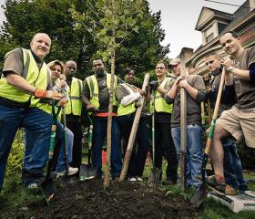
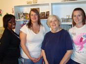
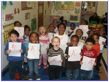
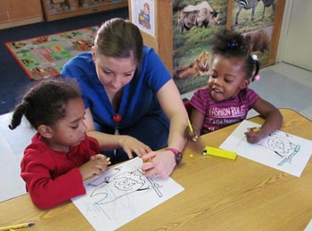
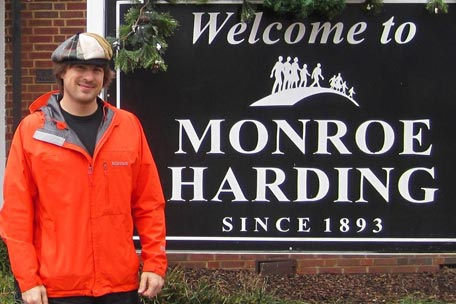
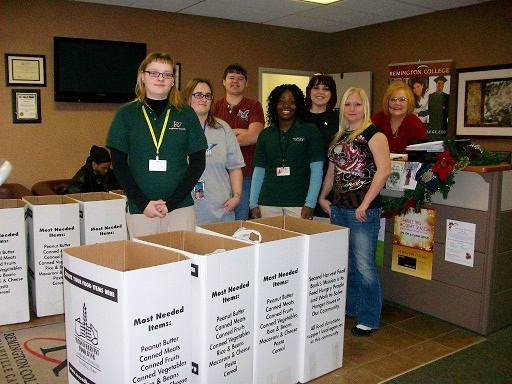
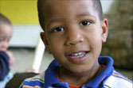

Pre-WWW Trip Information
Important Dates
- Wednesday, September 12, 2012: Trips depart from campus
- Tuesday, September 18, 2012: Trips return to campus
- Wednesday, September 19, 2012: Day in Chicago
- Thursday, September 20, 2012: ASB programming ends at 9am and move-in begins!
Getting to Campus
ASB does not provide transportation from the airport to campus. Your site leader will happily share information on how to take the train or a taxi to campus.Packing List
Participants will receive a detailed packing list specific to their volunteer site from their site leaders in early August.2012 Sites
Pittsburgh, PA |
|
|  | Tree PittsburghTree Pittsburgh is an environmental non-profit dedicated to engaging citizens to maintain, plant, and protect trees in the city’s urban forest. Pittsburgh "Tree Tenders" are the national guard of the arborist world: a civilian group taking care of what the pros can't quite get to. On this trip, participants will do gardening and landscaping at a different site in Pittsburgh every day, allowing them to work outside and see all the Pittsburgh has to offer! Tree Pittsburgh Website |
Pace SchoolThe Pace School is a private, nonprofit day school located outside of Pittsburgh, Pennsylvania serving hard-to-teach, hard-to-reach children and adolescents in grades K-9. It provides educational and therapeutic services for students with learning disabilities and has most recently begun to focus its attention on students with emotional and behavioral disorders. On this ASB trip, participants will work one-on-one with students inside and outside the classroom, and have the opportunity to work directly with teachers as aides. Participants will help with everything from tutoring students in math and science to leading activities like kickball and gymnastics inside the school's gymnasium. Pace School Website |
Madison, WI |
|
 |
Community GroundWorksCommunity GroundWorks is a nonprofit organization in Madison, WI that focuses on community education through gardening, urban farming, healthy eating and natural areas restoration. Overall, the organization manages 26 acres for the food production and restoration. Participants will work on a variety of projects ranging from trail maintenance, tree pruning and organic gardening to bean shelling, invasive species removal and nutrition education. Community GroundWorks Website |
|  | Middleton Outreach Ministry and Habitat for HumanityMOM is a non-profit that is leading a community-wide effort to prevent homelessness and end hunger for people throughout Middleton, West Madison and Cross Plains. Through the support of business partners, area schools and faith communities, as well as numerous individuals and service organizations, MOM provides - free of charge - food, clothing, housing assistance, emergency financial assistance, and special services for seniors. Habitat for Humanity is a nonprofit, organization dedicated to eliminating substandard housing. Habitat is founded on the conviction that every person should have a simple, decent, affordable place to live in dignity and safety. On this trip, participants will have the opportunity to spend half their week volunteering with MOM and the other half volunteering with Habitat for Humanity. At MOM they will assist the organization by working in their food pantry and with their other food distribution services. Additionally, they will have an opportunity to work in the senior service sector of their homelessness program. With Habitat, participants will assist in the completion process for one of the homes. Volunteer work will consist of painting, insulation, cabinetry, landscaping, and other home repair tasks. Middleton Outreach Ministry Website Habitat for Humanity Website |
Lexington, KY |
|
|  | Community Action CouncilCommunity Action Council for Lexington-Fayette, Bourbon, Harrison and Nicholas Counties is a private, non-profit organization founded in 1965 to study the causes and effects of poverty in our communities and work toward solutions. The Council combats poverty by offering opportunities for low-income people to achieve self-sufficiency and providing services so that each community member and family is able to reach their full potential. Council works to serve the low income population through advocacy, service delivery and community involvement. On this ASB trip, participants will be working on a variety of CAC programs from working in classrooms, to sorting and distributing food, to helping with light construction projects at both their urban neighborhood and rural community centers. Community Action Council Website |
|  | The NestThe Nest—Center for Women, Children and Families is an organization that provides high quality, comprehensive services to women and families in crisis while working to prevent child abuse and neglect. The offers resources for families to develop the skills and habits needed for a healthier lifestyle. These resources include child care, counseling services, parenting classes and crisis case management. On this ASB trip, participants will have the opportunity to work with both women and children in the center. Work may include assisting in the childcare classrooms, helping sort and distribute clothing, toiletries, food etc, and a variety of other tasks associated with the maintenance of the organization and the counseling, parenting, and childcare components of their programming. The Nest Website |
Nashville, TN |
|
|  | Monroe Harding HomeStarting as a Presbyterian Orphanage in Nashville, TN in 1893, Monroe Harding Home has now expanded their programs to meet the modern-day needs of children and youth in state’s custody. Beyond the basics of food, clothing, and shelter, Monroe Harding also provides mentoring, safety and structure, relationship-building skills, spiritual formation, life skills training, education, and job placement. On this trip, participants can expect to interact with the residents of Monroe Harding on a daily basis as well as engage in various chores around the orphanage. Monroe Harding Home Website |
|  | Second Harvest Food Bank of Middle TennesseeSecond Harvest Food Bank of Middle Tennessee is one of the largest and most comprehensive of over 200 food banks and food distribution centers nationwide. During the 2009-2010 fiscal year, Second Harvest distributed more than 53.3 million pounds of food to hungry men, women, and children. Participants on this trip can expect to learn about the local food and nutrition needs of the community through assisting in food donation collection, sorting, and distribution. Second Harvest Website |
St. Louis, MO |
|
Our Lady's InnOur Lady’s Inn provides pregnant women and their children shelter and hope for a new life. Since 1982, this site has served as a life-affirming alternative to abortion for more than 5,000 women who have chosen life for their unborn babies. For more than 30 years these families have been sheltered and supported in their efforts to live healthy and productive lives, attain educational goals, gain employment and secure stable housing. Volunteer responsibilities at this site may include childcare, meal preparation, working at the resale shop, and maintenance work both at the St. Louis and St. Charles sites. Our Lady's Innn Website |
|
|  | Kingdom HouseKingdom House has been transforming the lives of individuals in St. Louis since 1902. Through a variety of services, childcare, food & clothing assistance, job training, youth and teen program and Senior Companions, Kingdom House helps thousands yearly achieve self-sufficiency and gain economic independence. Volunteer opportunities may include tutoring, mentoring, stocking the food pantry, working at the thrift shop, watching young ones at the day care, and participating in the gardening program. Kingdom House Website |